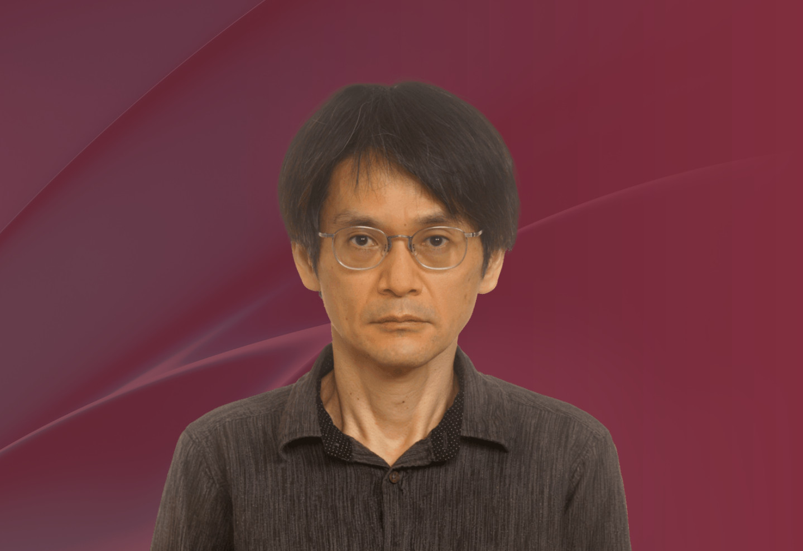

成員
卡洛斯・科尼格教授
日本
京都大學
數學科學研究所教授
京都大學
數學科學研究所教授

過往任期：
2026 年
2025 年
望月拓郎教授於 1999 年取得日本京都大學理學博士學位。他的職業生涯始於日本大阪市立大學，隨後在京都大學任教。自 2012年起，他擔任京都大學數學科學研究所教授。他曾以訪問學者身分於美國普林斯頓高等研究院(2001–2003)、德國馬克斯普朗克數學研究所(2005–2006)，以及法國高等科學研究所(2006–2007)進行學術研究。
他致力於複微分幾何學、代數幾何學和代數分析的研究。他的主要研究議題之一是探尋代數幾何和微分幾何對象之間的等價性。
望月教授獲頒多項榮譽，包括2006年日本數學會賞春季賞、2010年日本學術振興會獎、2010年日本學士院獎章、2011年日本學士院獎、2012年大阪科學獎、2020年朝日獎、2022年數學突破獎和2024年前沿科學獎。 他是2014年國際數學家大會全體會議特邀演講者。
(註：所有中文譯本，皆以英文本為準)